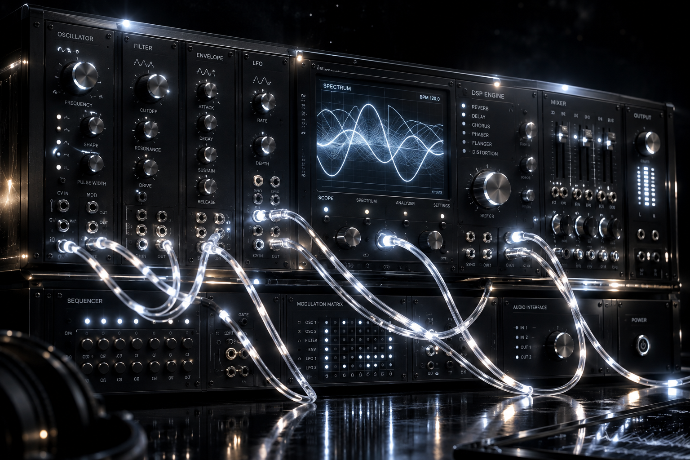

QOMA is not an ordinary auditory experience. At the intersection of neuroscience, psychoacoustics, and advanced digital signal processing (DSP) technologies, it is the result of over 7 years of in-depth research.
The human brain has a tendency to entrain to external rhythmic stimuli. QOMA creates a third internal rhythm in the brainstem using binaural beats sent to each ear with microscopic differences and perfectly calculated isochronic pulses. By actively stimulating Delta, Theta, Alpha, and low Beta waves; it triggers your transition into deep sleep, sharp focus, or a state of pure isolation within seconds amidst chaos.
A true sanctuary never repeats itself. At the heart of QOMA, there is no place for static and recorded audio files (MP3/WAV).
Every texture you hear is a generative architecture produced live in milliseconds on your device's processor. It is synthesized instantly using custom-designed analog synthesizer algorithms, slowly breathing Moog-like state-variable filters, and massive reverb networks. The unique mathematics of the East's microtonal comma system (53-TET) and the West's harmonic structure build an organically evolving, never-before-heard sonic space in your headphones. Pure harmony of code, mathematics, and hardware.

The modern world is a sea of overstimulation relentlessly bombarding the mind. QOMA acts as an acoustic shield blocking these chaotic frequencies. While masking mental fatigue with the dynamics of pink, brown, blue, and violet noise profiles, it allows the soul to return to its natural tranquility.
There is no outside world here. There is only you, your mind, and an infinite digital void.